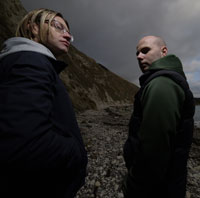

Jason Greenhalgh (Q Project) & Paul Smith (Spinback)
The pair first met in 1987, both living in and around the Blackbird Leys estate in Oxford,
England and brought together through a mutual love of hip-hop and school girls. Greenhalgh
was the first into the studio, with "Freestyle Fanatic" launching his career in 1991. However it
was the establishment of the Legend imprint and specifically Greenhalgh’s "Champion
Sound", which really took their profile above and beyond the slew of anonymous white labels
that were dominating the music at the time.
In 1994, the pair started recording together under the name Funky Technicians, with "Got to
Believe" the first in a series of records which pushed the label away from the fizzling darkside
movement and more towards the epic string sections and rolling beats which started to
appear on labels like Basement, Lucky Spin and Good Looking.
After six years of recording singles for Legend and others, the pair established the CIA label
and changed their name to the now familiar Total Science guise in the closing months of
1997, with the help of Brillo from Timeless. The release of their Silent Reign EP for Goldie's
Metalheadz breathed a new lease of life into the project, and the pair achieved a further
boost with a well-timed Bad Company remix of "Champion Sound" which conjured further
interest in what they were doing with their own label. Their debut album Advance exposed a
further field of interest, with down-tempo experiments logged as a series of "Breaks" on the
majority of their early EP's extended to some superb deep house, this breadth was taken a
step further with their Skin Deep imprint which has forged broken beat to considerable
acclaim.
The pair’s pioneering of a revival in old-school sounds and arrangements, together with
Digital and Reinforced, dominated drum & bass throughout 2001. After this followed releases
on high-profile labels such as 31 Records, True Playaz, Reinforced and Soul:r.
2000 saw the founding of CIA’s sister label Advanced, created as a means to keep up with
the high level of production output from the duo and their confederates, for which one label
was no longer enough. Following from this came the renowned Sektor series on Advanced.
Initially created as a way of combining up-and coming artists with those more established,
the series was also developed as a means to stress the importance more on the music than
the artists. Featuring artists such as Baron, Digital, D.kay, Lee, Juju, Beta 2 and Klute, the
Sektor series included seminal tracks such as “Squash”, and the ever popular “Champion
Sound” remix.
During 2003 the pair spent a significant part of the year promoting their music to all parts of
the world, touring the USA, Australia, New Zealand, Europe & Brazil. During this year CIA and
Advanced became more focused on showcasing other artists and nurturing the profile of
then-up-and-coming producers such as Beta 2, Zero Tolerance, Friction, Mathematics and
Baron-whose remix of Total Science's Nosher became without a doubt one of the year's
biggest dancefloor stormers, pioneering the jump-up resurgence of 2003.
With a new found musical focus- marked by a new studio setup, 2004 was used to up the
output quality alongside re-launching their dormant hip-hop/soul imprint - Skin Deep. In true
Total Science fashion of never binding oneself to one particular musical form, they released tracks on Creative Source, Defunked and Metalheadz alongside pushing a string of lucrative
12"s on their own labels: Advanced & C.I.A, of which 'No 1.Sound' on C.I.A and 'Defcon 69'
on Metalheadz achieved anthem status.
2005 was cataclysmic for this pioneering production outfit, after one year of a new studio
setup, they were back on top, producing top class music that was desired by everyone. C.I.A
and Advanced witnessed the release of an array of tracks from talented producers such as
Juju's 'Mojohand/Nomad', Calibre & Zero Tolerance's 'Diamonds and Pearls' and State of
Mind's 'State of Mind Experience:Chapter 1/2 whilst Q-Project's 'Ask Not' and Total Science's
'Greatest thing' stormed their way through the UK dance charts. Later on in the year, Q-
Project signed 'Bang Out', 'Uprising VIP' and 'In for a Penny, In for a Pound' to Creative
Source, Liquid V and Bingo, announcements followed by news that Q-project was to sign to
Hospital Records marking the start of some interesting solo projects, illustrated in the popular
'Hello My name is Q-Project' EP release. The action and buzz surrounding Q-Project and Total
Science collectively during 2005 put them in serious demand from promoters worldwide,
obtaining them a long list of gigs all over England and Europe, not forgetting to mention the
scoring of a prime-time New Years Eve set in New Zealand and a U.S.A tour lasting three
weeks.
'Mars Needs Total Science', the guys third album, was released mid 2006 and saw instant
success with album single 'Never Had a Dream' reaching Number 1 in the UK Dance charts
and a host of tracks from it being played by the likes of Hype, Fabio, Golde, Zane Lowe,
Ronnie herel and Trevor Nelson. Q-Project finally finished his exellent debut solo lp
“Renassance Man” which was released on Hospital in late Autumn.
2007 has seen the Oxford duo team up with DJ Marky’s label Innerground to form “CINNA”
The last release “2nd Date” featured vocals from Ayah and was a hot favourite, doing the
rounds of the D&B circuit and even found it’s way into the record box of superstar House DJ:
Pete Tong!! Mid 2007, TS collaborated with fellow Brazilian wonderboy: Bungle on a track
entitled “Snake Eyes”. This was one of many popular tracks that featured on Bungle’s debut
CIA LP: “Down to Earth.
Collaborations aside, TS have kept themselves busy remixing classic tunes: “Secada” by Zero
T & Beta 2 and “Dubplate” by Wots My Code, whilst Q Project recently embarked on his own
project to set up an imprint focused entirely on showcasing Q Project music: ‘Machine Funk’.
At present the guys have just finished a new 12 for Metalheadz and are currently working on
their fourth album, which is scheduled to complete early 2008.